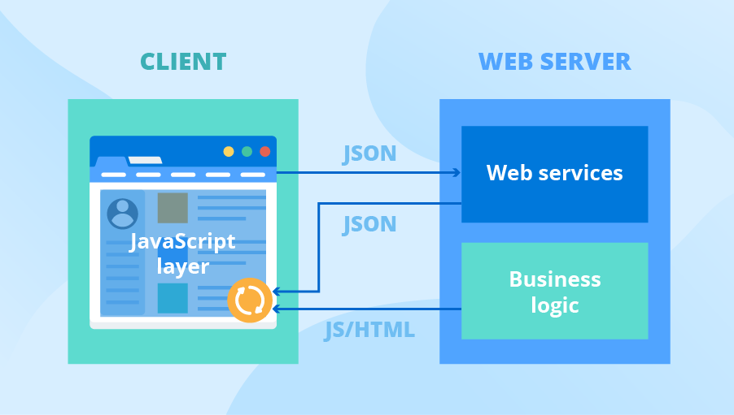

Separación de responsabilidades
Arquitecturas como MVC, MVP y MVVM ayudan a separar la lógica de negocio de la interfaz de usuario, facilitando pruebas y mantenimiento.
En apps grandes se aplican arquitecturas limpias y patrones como repositorios, inyección de dependencias y use cases.
